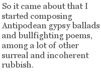
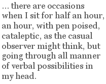

Interview (Paul Stevens)
Stephen Edgar is an impressive poet for all the reasons set out by Clive James, Judith Beveridge, Vivian Smith and Geoff Page in their contributions to this feature. He is also a pleasure to work with — though circumstances prevented me from participating in the actual interview process as I had hoped to do. After suggesting him as a spotlight poet, I ended up leaving most of the work to Paul, who has done a terrific job. Well, they both have. Stephen has clearly taken a great deal of trouble to respond thoughtfully to the questions, and his answers are often illuminating little essays in themselves. — Peter Bloxsom
***
Awards
1984 — Harri Jones Memorial Prize for Poetry
2003 — Grace Leven Poetry Prize and William Baylebridge Memorial Prize (for his fifth book Lost in the Foreground)
2005 — Australian Book Review Poetry Prize (for his poem “Man on the Moon”)
2006 — Philip Hodgins Memorial Medal for an outstanding contribution to Australian literature, at the Mildura Writers’ Festival.
Bibliography
Queuing for the Mudd Club (Hobart, Twelvetrees Publishing Company, 1985, ISBN 0959008209)
Ancient Music (Sydney, Angus and Robertson, 1988, ISBN 0207156980)
Corrupted Treasures (Melbourne, William Heinemann Australia, 1995, ISBN 0855615451)
Where the Trees Were (Canberra, Indigo/Ginninderra Press, 1999, ISBN 1740270134)
Lost in the Foreground (Sydney, Duffy and Snellgrove, 2003, ISBN 1876631643; reprinted Warners Bay, Picaro Press, 2008, ISBN 9781920957537)
Other Summers (Melbourne, Black Pepper Publishing, 2006, ISBN 1876044543)
Photography for Beginners (Compact Disc, Spit Junction, River Road Press, 2007, ISBN 9780980414820)
***
Paul Stevens: Let’s start with your beginnings. Tell us something about your childhood and youth, especially as they might bear on the poetry you write now.
Stephen Edgar: I was born in Sydney in 1951 in the suburb of Kogarah, which was later immortalized by Clive James in his Unreliable Memoirs — born in Kogarah, but we actually lived in Penshurst, a few stations to the south on the Illawarra line, which is where I spent all my childhood until I left home. I am the youngest of three children; I have a sister, the eldest, and a brother. Ours was not a particularly literary or artistic household in any way that I can recall, although my mother has always been a keen reader of literary novels and nonfiction of a sociological, historical or political nature. My father, who died in 1980, was a keen reader as a child, he told me, but as an adult he read nothing but things about fishing, his passion. We had one smallish bookshelf in the lounge room which I would browse throughout my childhood. Apart from a children’s encyclopaedia called, I think, The World of the Children, it consisted of my parents’ books. I recall Afternoon Light by Robert Menzies and things by and about Churchill, and books about the War — my father had flown Mosquito bombers for the RAF; Hawaii by Michener, which I eventually read; and two books by Colin Simpson, Adam in Plumes and Adam in Ochre, about New Guinea and Australian Aborigines respectively. I never read more than the odd snippet of them but I enjoyed the full-colour plates of bare-breasted women. There was also a terrific collection of horror and mystery stories (I wish I knew where that went; perhaps my brother has it) with things by Poe and Stoker and Le Fanu and others, but also Dickens and even “The Ballad of Reading Gaol”, which must have been one of the first poems I ever read. Oh yes, and a collected Banjo Paterson, which I also read and enjoyed. We kids did have our own books, of course. My sister had an illustrated Alice, for example, and I had Kidnapped, though funnily enough I never got around to Treasure Island until a few years ago. I assume we were read to when we were very little but I have no recollection of any of that very early stuff. I vaguely recall a Noddy book.
As a child I was always drawing, so one might have supposed that, if I chose an artistic career, it would have been as a painter rather than a writer. But I always had an interest in language too. I was always a good speller, and enjoyed writing compositions, as they were called at school, and I must have had a good vocabulary from quite early on because I can remember that on more than one occasion my mother said, “That’s a big word for a whatever-year-old”, in response to some utterance of mine. I can’t remember now what these spectacular words were.
PS: And how did you first come to writing poetry?
SE: I always tend to say that I began writing poetry when I was fifteen but in fact it goes back further than then. At primary school we would perform an annual play and I can remember that in fifth class (Year 5, as they would call it now) Miss Beauchamp asked if anyone in the class would like to try to write a play. For some reason I put my hand up and volunteered. With the help of a friend I cobbled together a dramatized version of one of the William stories — “William the Invisible”, I think. It was rehearsed once in class and never mentioned again. But that friend and I went on to compose a few humorous songs. In my early years at high school (this was Sydney Technical High School) I would continue to write from time to time lyrics for what I thought of as songs, but of course they were poems of a kind. But when I developed a friendship with a boy who did write real poetry and happened to mention this fact to him, he encouraged me to take it up seriously. Quite suddenly it seemed an exciting thing to do. I was fired with a passion for poetry and every afternoon when I got home from school I would sprawl on my bed with pen and exercise book and compose poems. Between April 1967, when this fervour began, and the end of the year I had written nearly a hundred.
PS: What were some of the earliest influences on you?
SE: By a curious conjunction of events the first influence on my poetry was Lorca. At virtually the same time as I began writing poetry I also became interested in Spanish — not a language taught at our school — and it so happened that the library had a copy of that Penguin selection of Lorca’s poems. So it came about that I started composing Antipodean gypsy ballads and bullfighting poems, among a lot of other surreal and incoherent rubbish. All of this was in free verse. But before 1967 was over I had already begun to hanker after a more structured and formal way of writing, though of course I had no skills as yet with which to do so. By another piece of luck, it turned out that our school library had a first edition of Eighteen Poems by Dylan Thomas. I discovered this in early 1968 and took it out on virtually permanent loan from then until I finished high school. I was obsessed and intoxicated by that book and read it again and again, along with all his other poetry, which I soon acquired. So from imitating Lorca I went on to imitate Dylan Thomas. Now 1968, looking back on it, was probably not the ideal time for a young Australian poet to be choosing Thomas as an influence, not when you consider what revolutionary things were occurring in the local poetry scene. But I knew nothing of that then. Undoubtedly Thomas can be a dangerous influence, in his extravagant use of language, and I subsequently had to make considerable efforts to purge my writing of those effects, though it has to be said that a tendency to be carried away by the sound of words at the expense of their meaning has always remained with me. The benefit, though, was that by imitating everything about Thomas’s writing practices — his syllabics, his half rhymes, his complex stanza forms — I quite rapidly acquired the technical skills which enabled me to write the kind of formal poetry I had instinctively been drawn to. I don’t know why exactly I have always wanted to write in closed forms but I have, and I have never seriously considered any other mode. I suppose I like the challenge set by rhyme and metre; they seem an incentive rather than a barrier. And I also like the idea of making a beautiful object out of words: a verbal sculpture and piece of verbal music.
We studied Keats and Frost and Judith Wright, and they all influenced me. Pope and Hope: I can’t see much of the former in my work but the latter had an influence. Auden as well, and Eliot, though his influence was more transitory. And The Metaphysicals – another Penguin anthology. Donne and Herbert made a great impression on me.
A piece of literary trivia: Michael Dransfield’s sister Frances was one of my teachers.
PS: Your remark that a career as a painter might have been predicted for you interests me because as I read your poems I overwhelmingly have the impression that in a great many of them what is being presented in fine detail is a visual surface which is then probed and questioned in the most delicately nuanced ways. Is this a conscious strategy on your part?
SE: That is an interesting observation. I don’t know that my early habit of sketching would have a great deal to do with that; for the most part I obsessively drew individual objects over and over — horses, boats, faces — rather than observing the world in any detailed way. And when I began writing poetry I don’t think that my poems exhibited, at least to begin with, any marked attentiveness to the surface details of the material world. That was an attitude, and aptitude, that I developed gradually over the years by conscious effort and attention. The American poet Anthony Hecht, whose poetry I love, makes a similar remark in an interview. In my case, I think reading Robert Gray — an Australian poet famous for his brilliant powers of observation and image-making — alerted me to the need to develop this faculty. Or should I say, awoke in me a desire to develop this faculty?
To answer your question directly, I think that what you say is true of many of my poems. Is it a conscious strategy? Well, it is a mode that, as I say, I have been drawn to and have developed over the years, so, yes, I suppose it is a conscious strategy.
PS: Many of the people who read The Chimaera are passionate adherents of formal poetry: as indeed I am. So the question of “why form?” seems endlessly interesting. What is it about form rather than free verse which appeals? I invite you to explore the issue of form a little deeper: why is it so satisfying to you? What advantages does it bring as linguistic artefact or medium of expression? How do you answer the charge of vers librists that form-driven poetry distorts meaning to fit form? Do you ever write free verse yourself?
SE: To begin at the beginning, although it is difficult for me now to distinguish prospective motivations at the time from retrospective rationalizations, one factor drawing me to formal poetry may have been the wish to check the incontinent flow of words. I mentioned that I wrote nearly a hundred poems in 1967. I wanted to channel and shape this verbiage. In 1968, after the Dylan Thomas conversion, I only wrote seventy-odd poems, and in 1969 about half that number. There was also the question of tradition. I wanted to feel myself part of a tradition of poetry in English and being acquainted with traditional prosody, and able to compose poems in forms identical or similar to those used by great poets from the past, was part of that.
The notion that formal poetry distorts meaning to fit form is a curious one. There can be some truth in it, if you are talking about beginners or the inept (McGonagall). But as E M Forster said, “How do I know what I mean till I see what I’ve said?” You discover your meaning in the process of writing. A poem does not pre-exist as some sort of Platonic form, word-perfect in your unconscious. You bring it into being and shape it in the act of writing it. There is not one exclusive formulation of words, and no other, which will embody the poem you set out to write (though when a poem is fully achieved its form of words may seem inevitable and unchangeable to the reader). It is part of the skill of formal poetry to find the words which fit both the form and the meaning. It is possible, with rhyme, for example, to snooker yourself occasionally and find that you can think of no appropriate rhyming word in a particular line. So, you go back and redraft the earlier line and come up with an alternative rhyme.
I spoke earlier of the satisfactions for me in the structural and musical qualities of form. Despite decades of practising the craft, and the neural pathways that this presumably develops, writing complex forms is difficult and requires imaginative and intellectual effort. I like that challenge and I like doing it successfully. But that is a function of form more for the poet than the reader. What does form offer? Well, there is the verbal music of rhyme and metre, and the larger-scale music of the periodicity of patterned stanzas. There is the rhetorical and architectural function of disposing and arranging the poem’s “argument” in stanza units. And just as there is a line-by-line play of end-stopping and enjambment, so with stanzas there can be a play of self-contained as against run-on stanzas. There is the mnemonic function. All of this can be subsumed in what I might call the apolaustic function: the sheer enjoyment value of all these combined strands. There is the counterpoint of natural speech rhythms laid over the metrical beat to create subtle rhythmical variations. There is the flow of grammar and syntax across the rigid grid of the metrical and rhyming pattern.
Some criticize rhyme, for example, as gratuitous and artificial. But that cuts no ice with me. Art is artificial, for heaven’s sake. I relish the artifice. A poem that mimics the verbal patterns of the most casual conversation is in its own way just as artificial as a villanelle. And as for the gratuitousness of rhyme, well, Michael Wood, speaking of the poetry of Tony Harrison, says, “Rhyme connects what is otherwise scattered, makes magical semantic connections where there seemed to be only sound.” The search for a rhyme can, far from distorting meaning, summon up a marvellous, and marvellously apt word that would otherwise have escaped one’s notice.
On a more personal level, something that has only occurred to me in recent years is that there may be a correspondence between my use of form and my thematic, not to say psychological, preoccupations. While I have always found the physical world ravishingly beautiful, I have always had a rather bleak outlook about existence: life is full of horrors and suffering. Perhaps there is a correspondence between my sense of human suffering in a beautiful world and my placing often pessimistic themes in elaborate verse forms.
There is the other sense of formal as well: elevated. I think a lot of contemporary poets, wanting to shun old-fashioned poeticisms, are rather afraid of richly charged language. I’m not.
Let me emphasize, though, that I have no objections to free verse. Free verse can be well or badly written just as formal verse can. I have written a handful of poems which might be called free verse, in that they have no rhyme and no regular metrical pattern, though they still tend to be arranged in stanzas with equal numbers of lines, so a reader might not think of them as free verse. “The Choices” from Corrupted Treasures and “The Worst Thing” from Where the Trees Were are the only two such poems published in books.
PS: You mentioned the early influence of Dylan Thomas on your own poetics — “his syllabics, his half rhymes, his complex stanza forms”. How did you use these techniques? How has your poetic technical practice since developed?
SE: As I said, I did not to begin with have any of the technical skills to write formal verse, but I could count. So when, in my voracious reading of and about Thomas, I discovered that he wrote syllabic verse, I immediately saw a path to follow. I began to write syllabic verse, not needing to worry about the question of stressed and unstressed syllables. I also imitated his habit of using half-rhymes rather than full rhymes. This was all in the rather hero-worshipping way, I suppose, that I had earlier adopted black socks after reading that Paul McCartney always wore them. Quite quickly I began to compose poems in often long and elaborate syllabic and rhyme patterns. Curiously enough, by doing this I also began to get the hang of metrical verse, almost by osmosis, and I would also write the occasional metrical poem, though for the most part I continued with syllabic verse. I tended to use half-rhyme with the syllabic verse and full rhyme with the metrical. For most of this time I was completely unpublished.
Wagner said somewhere that you should make up your own rules, and stick to them. I stuck to these rules from 1968 to 1980. Then, quite abruptly, I decided that syllabics were no longer appropriate for me. It seemed to me that if you happened to have a strong rhythmic sense, syllabic verse often turned into metrical verse by default. In order to justify using it, it seemed to me, you had to take great pains to avoid anything that might approximate iambic rhythms. Marianne Moore did this, but the effects that she achieved were not at all what I was after. I was for a short time rather flummoxed. I did not at that time wish to commit myself exclusively to metre. My recollection is that I had been reading people like Bunting and what I was after was the contrapuntal, jagged effects his poems had, rather than the smooth and mellifluous quality of metre (though, when you think about it, there is nothing very smooth and mellifluous about Donne, for example). After a period of reflection, I decided to try a sort of accentual verse — a kind of sprung rhythm, if you like. Hopkins is another poet we studied at school, whom I forgot to mention earlier, and I loved his work. But I don’t think I was particularly thinking of his kind of sprung rhythm, which is so distinctive, and accompanied by so daunting a theoretical exposition. I just decided to write in a measure that only counted the stressed syllables in each line and left the number of unstressed syllables completely random and variable, line to line, according to the effect I wanted to achieve. “Beauty and the Beast”, the first poem in Queuing for the Mudd Club, is an example.
As in the syllabic period, I would also write metrical poems from time to time. But once again, and much more quickly this time, I began to feel dissatisfied with this mode of writing. There seemed something haphazard, hit-and-miss, about it. Specifically, how could I be sure that a reader would read a given line the way I had written it? How could I be sure that a reader would read out the same number of stresses that I had written in? Rather like Francis Thompson at the end of “The Hound of Heaven”, I admitted at last that I had been tracked down by metre and that that was my destiny. This would have been in the mid-1980s. I was reading Larkin again at this time (I had come across him at school; funnily enough, there was a Philip Larkin in my class) and had discovered Wallace Stevens. From that time on I wrote, almost exclusively, metrical verse, with just the occasional free-ish verse poem, as mentioned above. I also began writing unrhymed poems, blank verse mostly, but sometimes in other line lengths — trimeters, say, and dimeters. It was not until this time, when my habits and practices were more or less fully formed, that I began to read Anthony Hecht and Richard Wilbur, so that they were confirmative, rather than formative, influences.
There have been no further changes in my technical approach since then.
PS: How did you start to find fellow poets, enter a literary scene, to share your work, to publish?
SE: I had nothing published while I was still at school and then when I left school at the end of 1969 I entered on a decade during which I wrote little, and little of what I wrote was any good. I worked in Sydney for eighteen months or so, then went to London for three years, and then came back and moved to Hobart in 1974. My partner Ann was from Hobart. She was a friend of Gwen Harwood, so I met Gwen straight away. I attended university there. It wasn’t until 1979 that, quite suddenly, my imagination started to work again and I seemed to know what and how I wanted to write. I sent some poems to the newly established Tasmanian Review, which was soon renamed Island, and had a couple accepted. So it was that I met Andrew Sant, poet and co-editor of the magazine, and Michael Denholm, the other editor, and in due course other members of the literary scene in Hobart, which is quite large considering that Hobart is a small city. Andrew and the poet Sarah Day became, and remain, close friends. As did Margaret Scott; she was one of my English lecturers at university. I also met the poet Graeme Hetherington while I was at university; he was a lecturer in Ancient Civilizations.
After the acceptances from Island I began to send work out to the various literary magazines around the country and, among the many rejections, began to accumulate some acceptances. Vivian Smith, who was at that time the literary editor of Quadrant, took several poems and I eventually met him on one of his visits to his home city and over time developed a friendship with him. It’s hard to remember after all this time when and how I met particular individuals, but Alan Gould and Jan Owen have been friends for a long time. When I became the poetry editor of Island between 1989 and 1994 I established acquaintances, if only by correspondence, with many poets, one of them being Judith Beveridge. I mention this because about a decade later, and after Ann’s death, I finally met Judy in person, and the upshot of that is that we are now married, and of course I am back in Sydney.
As for book publication, Andrew and Michael, in collaboration with bookseller Clive Tilsley, established a small press called Twelvetrees and I was asked to submit a collection, which became my first book, Queuing for the Mudd Club (1985). A couple of years later I took a punt and sent a new collection to Angus and Robertson, where Les Murray was poetry reader. To my great delight and relief, he accepted it. That was Ancient Music (1988). I thought I had it made. But A&R were taken over, Les Murray left, and they shed most of their poetry list. Things became very difficult for some years.
PS: So how did your career develop from there to now?
SE: My career has developed the way hedgehogs mate: slowly and with difficulty. It is hard to speak about these things without sounding self-serving or hypersensitive. For many years the Australian poetry scene was riven with terrible factional rivalry and jealousy. It is not too much to say that it went as far as hatred. Professional animus became personal hostility. But my poetry, I always felt, didn’t fit into either of the two main camps. Obviously I was not aligned with the so-called Generation of ‘68, whose main influences were Americans like O’Hara, Berrigan, Ashbery etc. But nor did I feel particularly welcome in the mainstream because by the time I appeared on the scene they had mostly abandoned formal verse too. Older poets like Gwen Harwood might be allowed to continue in that mode, and be celebrated for it, but in the younger generation that was frowned on. Or so it has always seemed to me. Indeed some of the older poets who had been formalists in their younger days were freeing up their writing towards the end. Gwen herself was less formal in her last poems, as were David Campbell and Judith Wright, and even Hope included some fairly free poems in his last book. Those divisions have largely, though not entirely, disappeared now, but I have always felt that my being a formalist has contributed to my being ignored — and it possibly didn’t help to live in Tasmania, which tends to get left off the map in all kinds of ways. But I have always had my supporters too: Gwen Harwood, Andrew Sant, Kevin Hart, Jamie Grant, Alan Gould, Philip Hodgins (sadly no longer with us) and more recently Clive James have all at various times been advocates of my poetry, for which I am profoundly grateful. And Judy, of course.
After Ancient Music several years passed before I was able to get another book published. Eventually Heinemann Australia established a poetry list, with Jamie Grant its reader, and my third book, Corrupted Treasures, appeared in 1995. But Heinemann didn’t hang around. They soon decided not simply to abandon poetry but to get out of trade publishing altogether. And most of the large publishing houses also jettisoned their poetry lists in the late 1990s. Like virtually all other Australian poets I have had to rely on small publishers since then for my books. My forthcoming seventh book, History of the Day, will constitute the first time in my career that I have had two consecutive books published by the same publisher. Black Pepper Publishing in Melbourne, who published my last book, Other Summers, will be doing this one as well. I have sometimes had the feeling that I am the kiss of death to a publisher. A&R published me and then were taken over and scrapped their list. Heinemann published me and then abandoned trade publishing. Duffy and Snellgrove published Lost in the Foreground and then went out of business.
PS: Clive James speaks of your “easy-seeming lyrical impulse”. How easy for you is the crafting of verse? How do you compose? What steps do you take your work through?
SE: “Easy-seeming” is the kind of compliment you hope to get, I suppose; you don’t want it to look as though you are struggling. You want the art that conceals art. As I said earlier, writing complex forms is, or can be, difficult. Not all my poems are in complex forms, of course, and not all of them rhyme. It’s hard to say how hard it is. After years of practising the craft you hope you have acquired, and improved, some skills. A lot of work goes on in my head without anything appearing on the page, and there are occasions when I sit for half an hour, an hour, with pen poised, cataleptic, as the casual observer might think, but going through all manner of verbal possibilities in my head. I compose, as I have done since the beginning, with pen and paper. I write the first draft, usually in one sitting, unless it is a particularly long poem. This may take several hours but not always; some poems come with relatively little effort, some you have to wrestle with more. Then over subsequent days I revise and refine the poem, working through various drafts. When I began, back in the Thomas phase, but even on into the 1980s, I might spend some weeks on a poem. There is one poem I can think of, which I now regret publishing in my first book (I won’t identify it), which I worked on over the course of more than a year. These days I seem to write poems more quickly. One way in which I never imitated Thomas was in writing dozens and dozens of drafts and hundreds of pages. I’ve rarely written more than ten or twelve drafts of a poem, and usually more like five or six. But what is a draft? A draft is when you write the poem out again regardless of how many or how few changes you have made. What matters is the quality of the changes you make between first draft and last, not how many drafts there are. Nor have I been a poet like Elizabeth Bishop who may keep working at the same poem for years and years before finishing it. Generally I work on a poem and finish it and that is that. I then go on to the next poem. However, I am always prepared to revisit a poem if I suddenly see a way to improve something. This can even be with poems written years before, and indeed with poems that I have never published and don’t intend to.
One aspect of my writing is worth mentioning because people tend to find it strange. In 1978 I dried up and went for a whole year without writing anything. Then, as I mentioned above, in 1979 my imagination started to work again. What happened was that I experienced a greater flow of ideas for poems than I could keep up with, or hold in my head. So I started to keep a notebook and jot down these ideas as they occurred to me. But because the new ideas came more quickly than I could write them I began to accumulate a backlog. At first it might take a few weeks to get around to a poem in the notebook, then, a few months, and finally years, because this spate of creativity continued from 1979 to about 1992. In other words, I became a very unspontaneous poet. When most poets think of a poem, they write it. When I thought of a poem I jotted the idea in my notebook because I had all these earlier ideas crying out to be written. The usual question is, “But after all that time, how could you recall, or revive, the feeling that came with the idea and make it live?” I don’t know, but evidently I could because I have all the poems to prove it. Like other aspects of writing it was a faculty that I developed and trained, I suppose. Some notes never make it into poems. Usually there is a hook of some kind in the note, an image or connection, by means of which I can summon up the poem. Sometimes it may happen that when I first look again at a note a considerable time after it was made I can no longer feel my way into it or see how a poem can be made of it. But then the second or perhaps third time I come back to it I suddenly find my way in. That happened with “Midas”, a longish poem, which I suddenly brought forth in all its detail after passing over the scanty note several times. It sometimes happens that the poem which results is greatly changed from the original notion. By the time I get around to a particular note some new aspect may spark my imagination; I may go off at a tangent and not end up writing what I first thought the poem was about. When I say “idea”, by the way, I mean whatever it was that suggested a poem: an image, or group of images, usually, with some sense of what they implied or how they could be unpacked.
PS: Clive James also describes your work as “spare”. Do many of your poems never see the light of day? And against the notion of “spare”, many of your poems that are published are (perhaps) unfashionably long, and engage detailed complexities of particular themes in extended meditations. Is such a sustained act of concentrated poetic composition difficult compared to that involved in writing a shorter lyric? What challenges does it involve?
SE: In the context in which he wrote that (a cover note for Lost in the Foreground) he must have meant that I had not written, or at least published, much, but at that stage he wasn’t as familiar with my work as he has become. I just did a cold call on him: I sent him a copy of Where the Trees Were, carefully remembering to mention that I was born in Kogarah, and asked him if he would write a blurb for my next book. He normally bins all unsolicited books, he told me, but fortunately he read mine and liked it and agreed to write the blurb. He was not referring to any quality of the poetry itself, I think. In fact Lost in the Foreground was my fifth book and I was fifty-one when it appeared, so I don’t know whether that constitutes a “spare body of work” or not. I have published more, and more frequently, in recent years. History of the Day will be my fourth book in just over nine years.
Yes, many of my poems have never seen the light of day. Before I went to England in 1971 I destroyed the bulk of what I had written to that time — over 150 poems. Not counting those, I have written just over 600 poems. My books, including the forthcoming one, contain about 260 poems. There are a few poems which have been published in periodicals but have not been collected in books. Most of the unpublished ones date from the first half of my career, though. These days I have, I hope, I higher success rate, and so publish a higher proportion of what I write. One of the great frustrations and disappointments when you are starting out as a poet is the frequency with which the poem in your imagination fails to appear in the poem you actually write; “the fair notion fatally injured”, as Auden said. Mind you, there are more than a few among the unpublished ones which might have been chosen for books; there was an element of luck in what went in and what was left out. Peter Porter has said that he publishes only about a quarter of what he writes. Pretty amazing when you consider how much he has published.
Are many of my poems unfashionably long? Hm. Now that I think about it, someone did make a similar comment to me some years ago. Lost in the Foreground has quite a few longish poems in it. I think you may have hit on the explanation yourself when you talk about the “detailed complexities of particular themes in extended meditations”. My imagination happens to work in that way, so that a certain expansiveness is probably inevitable. Poems which seek to capture a single mood, or moment, may be quite brief, but poems which present, as you put it yourself earlier, a visual surface in fine detail, and then probe and question it, are going to be longer. The length is a function of the process rather than something pursued for its own sake.
But there are, of course, a few quite deliberately “long” poems, by which I mean a few hundred lines, not a book-length poem: “Dr Rogers’ Report” and “Bluebeard’s Castle” from Ancient Music, “King Pepi’s Treasure” from Corrupted Treasures. I said earlier that I normally write the first draft of a poem in one sitting. Obviously that does not apply to longer poems, so they are more difficult in that sense, that they take longer to get down on the page. If you take a poem like “King Pepi’s Treasure”, which is, what, 300 lines or so, in about eight sections, that took a lot of effort even before I sat down to write it. I remember Tom Stoppard saying that for him the hardest part of writing is getting to the top of page one. “Pepi” was a bit like that. I kept coming back to my notebook note for that poem over several years, as I recall, trying to work out just how to cast it. Should it be rhymed or not? Should it have stanzas? What metre or line length should it have? Even what content should it have to embody the basic narrative? But once I hit upon the, in retrospect fairly obvious, idea of casting it in blank verse the various elements came together quickly. A similar thing occurred with a more recent long poem, which is twice as long as “King Pepi’s Treasure”. It hasn’t appeared in a book yet. I likewise came back to the notes for it, like a dog coming back to a bone, for years, mulling it over, trying to reach a firm sense of its form and arrangement and, again, exact content, sometimes despairing that I would ever get a handle on it. But once again, quite suddenly, all the elements came together and I suddenly saw how to do it. In both these cases the major difficulty was in the imaginative preparation; the actual writing was in some senses easier than it is for a shorter, more elaborately patterned poem.
PS: How important do you think sequencing and order of poems is when compiling a selection of your work? I’m thinking for example of the arrangement of poems in Other Summers, and especially of the interesting effects of the placement of the three poems entitled “Im Sommerwind” where you seem to return to a particular theme but play it each time with variations of form, phrasing and perspective: and a large part of each new variation’s effect seems to come from its context in the continuum of poems.
SE: Well, I give quite a lot of thought to the arrangement of poems when compiling a book. I was going to say, I imagine all poets do, though I have heard of poets who simply place the poems in chronological order. I think Mandelstam, and perhaps Rilke (?), did that at least sometimes. My books have generally been compiled retrospectively. That is, I haven’t necessarily written poems to a preconceived plan or thematic program; rather, I have looked at what I have written over a period and made selections, first, of course, on the basis of quality, but secondly according to thematic strands that I perceive during the selection process. It may seem odd, but you don’t always recognize your own preoccupations at the time you are writing poems. You may think that this poem is about such and such, and that poem is about something else, and so on, but only some months or years down the track do you see that during a particular period you kept writing about similar or related things. When these themes and motifs become apparent you can then make decisions about arranging the poems in such a way that they speak to each other, as it were, and make a pattern, or number of patterns, according to subjects, themes and images etc. In the case of the three poems called “Im Sommerwind” in Other Summers, I had written the first and third of them consecutively; they are really just different versions of the same poem. Then when I wrote the one that occurs second in the book, I decided to give it the same title (in fact in my notebook I had already assigned this title to all of them) and place it where I did, because it allowed the summer motif to embrace two quite different thematic strands: the personal and the historical. In the case of this book, by the way, I became aware, well before I had written all the poems that would comprise it, that the motif of summer was cropping up in quite a few poems, either directly or by implication. Of course, the book is not about summer, none of the poems are specifically about summer; summer simply provides a matrix of imagery, just as in Where the Trees Were none of the poems are about trees but tree images and references occur in many of them. In Tasmania, where conservation and specifically forestry issues loom large, quite a few people, upon hearing what I was going to call that book, made the immediate and totally erroneous assumption that it would address such issues.
PS: I hovered on applying a musical metaphor to your work in my previous question. In what ways does music influence your work?
SE: Some reviewers of my books have made mention of music, in one way or other, in reference to my poems. I think that in the matter of the arrangement of poems in a book you could see some analogy, perhaps, with a musical work, such as a suite or, better, a symphony, where there is some kind of development of material and a conclusion that refers back to the beginning, but that wouldn’t be peculiar to my books. To be frank, I don’t know in what ways music influences my work. I listen to music a lot — for the most part classical music, though I also like some popular music, particularly music dating back to my adolescence, like Bob Dylan, for example. But I can’t read music or play an instrument, so I can’t bring any musicological knowledge to bear on my writing. I spoke earlier about musical qualities in poetry which I am drawn to, and it may seem that the formal aspects of my writing are somehow connected to my love of music. But I am sure that there are many music-loving poets who don’t write formally at all. I’d say that this is an influence that operates at the subconscious level. There is one case I can think of where music had a quite explicit influence (explicit to me, that is) and that is “Bluebeard’s Castle” in Ancient Music. This poem was suggested not by the folk legend of Bluebeard so much as Bartok’s opera of that name, which is largely psychological. Having been listening to that opera a lot at the time of writing the poem, and to other works of Bartok’s, when I was making decisions about how to structure the poem I thought of his sixth string quartet. It is in four movements, the first three of which are introduced by the same slow theme, before they head off in their different directions. The fourth movement sounds as if it is going to do the same; it too begins with this slow melody, but instead of being an introduction it expands to become the whole movement. So I did an analogous thing in the poem. I began each of the first three parts with an introductory section, not of identical content, but related content. This content is then expanded to become the whole of the fourth part.
PS: Within your Other Summers collection the sequence “Consume My Heart Away” really stands out for me in terms particularly of tone and content: the poems in it seem much more passionate and personal than most of your other work which can at times present as almost objective in its recording of phenomena, at other times apparently more personally engaged, but rarely with the intensity of “Consume My Heart Away”. The sequence creates an effect of incredibly personal and strong emotion, with much of the dynamic of the poems generated by the tension between that emotion and the disciplined art in which it is represented. How do you assess the place of this sequence within the context of your body of work? Is this a direction you in which you think your work will continue to go?
SE: I am glad that that sequence appealed to you but I certainly hope that I will never have occasion to write anything like it again, which I am sure you will understand when you consider the painful nature of the subject: a failed love affair. Within the context of my body of work this sequence is unique, so I am afraid that anyone who thinks it is the best thing I have done and wishes to see more of the same will be disappointed. I think myself that it is one of the best things I have done but it’s one of a kind. Of course I have always been prepared to write personal poems from time to time over my career, but these have usually been elegies about the deaths of various people. Love poems, whether celebratory or doleful, have not featured thus far. My new book does contain some personal poems: two or three celebratory love poems for Judy and some elegiac poems about Ann. Poems in the latter category also appeared in my previous two books and will appear in the one after next, as you can imagine, after a thirty-year relationship.
The reason that “Consume My Heart Away” is so distinctive in character is, I think, that the relationship it records, though brief and apparently superficial, occurred at a time when I was particularly emotionally raw. I don’t want to go into this in any great detail, but it occurred between Ann’s death and my meeting Judy. It was probably — in retrospect certainly — unwise of me to embark on such a relationship. But I did, and its failure made an incommensurately painful impact. And this impact led me, contrary to the practice outlined earlier of putting new ideas into my notebook, to get the poems down immediately in a white heat. But that was a function of the unique character of the situation, rather than a new direction for my poetry. (I should add, by the way, that over the last ten to fifteen years I have written a mixture of poems mined from the notebooks and poems written immediately when conceived, whereas from 1979 to 1992 they were virtually all the former.)
I remember reading a remark of A D Hope’s many years ago to the effect that a poem should be about its subject, not about its author. Like all such dogmatic pronouncements it probably has no general validity but it made an impression on me. It has always been my intention to write impersonal, objective poetry, at least in the sense that I never wanted Stephen Edgar and his daily doings to constitute the subject of my poems. And that is still the case, generally speaking. Of course all poetry is autobiographical in one sense, that your own unique character and experience inform it, but beyond that I have tried to avoid too personal and confessional an approach. Not least because my own life has been fairly uneventful. Sometimes a poem may be written in the first personal singular but really have nothing much to do with me. And the reverse can happen too: a poem may be in the third person and largely objective, but smuggled into it may be some poignant or potent detail from my private life.
PS: You are married to another Australian poet, Judith Beveridge. How does it work out having two poets in the house? Does it create any problems? Are there any advantages? Do you ever find yourself wondering whether the other will make a poem out of a particular domestic situation?
SE: You may want to get Judy to vet my answer to this one. Since Judy is, if anything, even more committed than I am to keeping herself out of her poetry, I don’t think there is any likelihood that either of us will use domestic situations for our poetry. As for your other questions about the relationship, it’s difficult to answer them. On the one hand we didn’t get married because we are both poets, but our both being poets obviously meant that we have much in common. And fortunately we were both genuine admirers of each other’s work well before we met. We show each other poems we have written, and offer the odd comment, but don’t for the most part discuss our work in prospect. We each have a study, so we work quite separately. Our writing methods are quite different. It did occur to me, when I was planning to move to Sydney to live with her, that there might be difficulties, but we seem to have slipped quite easily into a regime where we accommodate each other’s writing habits. The only area where a problem could potentially occur is in regard to my male ego: since Judy is much better known and more highly acclaimed than I am, I might conceivably suffer from professional jealousy. But I seem to be successfully resisting that pitfall so far. Judy appears to be completely free of professional jealousy; women artists in general don’t seem to be afflicted with jealous rivalry in the way that men are, and are much more mutually supportive. One mercenary advantage occurs to me: if either of us gets invited anywhere we generally both go, because accommodation is already provided and paid for.
PS: I’m always interested in the relationship between a poet’s economic activity and his or her poetic vocation. How well do the two coexist and inform each other for you?
SE: Looking back on my life I am almost incredulous when I realize that I have not held a full-time job since 1974. I am still not sure how I have managed it. Some poets can have real full-time jobs and still function successfully as poets. I know I couldn’t. If I had had to work full-time and support a family I don’t think I would ever have written anything. There is no denying that for many years I was subsidized by Ann’s income while I held a part-time library position. Since that job ended in about 1990 I have had to scratch and scrape a living from freelance editing, proofreading and indexing and a few other odds and ends. But I doubt that I would have survived without the support of periodic grants from the Australia Council, and I eke those out with a frugality that would make my Scottish ancestors proud.
That’s the economic side. As for the nature of the jobs I have had and their influence on my writing, that’s harder to say. I did briefly work at the Wrest Point Casino in Hobart and that gave rise to two or three poems, most specifically “Observations of an Attendant” in Lost in the Foreground. Most of my jobs, though, have been neutral in their effect on my vocation. They have brought me an income, such as it is, or was. I am trying to think whether libraries have figured in my work at all; there may be some allusions but nothing to compare with Borges.
I think it is a good thing to have work of some kind outside one’s literary activity, quite apart from its being financially necessary. Few people can actually work full-time as poets, and you need something to make you engage with the world.
PS: You were the poetry editor for Tasmania’s literary and cultural magazine Island for some years. Tell us something about that experience, especially as it might have influenced your own work.
SE: Well, as I said, I had met and in due course become friends with the two editors, Andrew and Michael. In about 1986 the then subeditor (or copy-editor, to be accurate) resigned and Andrew asked me if I would like to take on that role. I was happy to do that, so I accepted, and in fact I still do that job to this day, even though I am now in Sydney. In 1989, when the magazine was ten years old, they decided that it was time to bow out and hand the magazine over to someone new. A single editor was chosen to replace the two of them, but Andrew stipulated that there should be a new position of poetry editor. He was very keen for me to accept that post. To be honest, I was not very enthusiastic about the idea but I did accept. I remained in that post from late 1989 until about mid-1994 when a conflict between the editor and the management committee provided a good excuse to leave.
I did not really enjoy doing that work very much and never felt that I was suited to it. To be a good editor of any kind you have to be active, I think, to go out in search of writers and material rather than just wait for whatever happens to turn up. Because of my personality type, I am not very good at that. But I was conscientious and often wrote commentary on rejected submissions, which was time-consuming. As a poetry editor you may make some friends but you undoubtedly make enemies too. Poets do not like to be rejected and have long memories. The job had no influence on my writing that I am aware of. I was enormously relieved when I finally left the position and I have no intention ever to do anything similar again.
PS: Since one of The Chimaera’s heads is focused on the topic for this issue, I must ask: do you write much Light Verse?
SE: I used to write a certain amount of light verse but less so in recent times, for reasons that I’m not entirely sure of. My second book Ancient Music has a couple of light-hearted digs at Ronald Reagan. Remember him? One reviewer said that the book contained “a few attempts at humour”, so I guess he wasn’t laughing. In Corrupted Treasures there is a spoof of William Carlos Williams’s poem about the plums in the ice-box, and a poem about a nudist camp. There are some unpublished things — such as a spoof of Wallace Stevens’s “Thirteen Ways of Looking at a Blackbird” spoken from the blackbird’s point of view. There are also of course private verses included in correspondence from time to time and never meant to be published. Gwen Harwood was a great one for including funny poems in letters and postcards and I occasionally responded in kind. The most recent piece of light verse that I wrote was about four years ago. After I had launched a friend’s book of poetry, the bookshop owner asked me if I would do him a favour and write a poem on a particular subject. “What subject?” “What makes poets drink so fucking much?” So I wrote a villanelle with that opening line. The really funny thing about that poem is that when a local magazine editor wanted to print it, my friend, not realizing that I had penned it, and apparently failing to see the joke, took offence and the editor had to pull it. The poem “How Long Have You Been Having These Feelings?”, which accompanies this interview, will appear in my next book. I’m not sure whether it strictly qualifies as light verse. It is meant to be humorous but is more of a surreal narrative driven by a particular complicated rhyme scheme than a piece of light verse as generally understood. Actually there is another poem of the same kind with the same rhyme scheme in Lost in the Foreground: “Entropy Blues”.
PS: What do you think of the state of the art of poetry in Australia and the world?
SE: That’s a very big question, which could sustain an entire interview in itself. What did Madame Esmeralda predict in Gwen Harwood’s poem? “Good poetry will change, bad will be much the same.” I’ll restrict myself to one observation. In view of the death of poetry which is sometimes proclaimed and the paucity of readers, it is amazing how many people are writing it. And when you think of all the schools of creative writing around the English-speaking world pouring out thousands of people a year, many of them writers of poetry with every intention of publishing books — well, it gives you pause. And perhaps the most alarming thing is not that so much of it is bad poetry, but that so much of it is probably good poetry. How on earth, I ask myself, can anyone hope to get a grip on that vast body of material? How will the winnowing of great from good and mediocre and bad take place? It occurs to me that there may well be more people alive and writing poetry in English today than in the entire previous history of the language. I find it all rather overwhelming.
Poetry may well be more various today than it was in the past. As I said earlier, just because I am a formalist myself it doesn’t mean that I disparage free verse. But “free verse” is a very baggy and imprecise description. In the house of poetry there are many mansions. When I was young and besotted with Dylan Thomas I went out of my way to make my verse as obscure as possible. Some of my poetry may still be somewhat oblique but in general I have worked my way, I think, towards greater clarity. I think much contemporary poetry is written with no eye (or ear) to the general reader and is intended exclusively for a coterie of like-minded practitioners. I don’t want my poetry to appeal only to fellow poets. I would like to think that at least some of it is both good poetry and accessible to any literate person.
PS: You have a new volume forthcoming in 2009. What can you tell us about that, and about where you think your poetry might go from here?
SE: Well, I can say a few basic things. The book is called History of the Day. There is an epigraph from Lawrence Durrell: “The picture I drew was a provisional one — like the picture of a lost civilization deduced from a few fragmented vases, an inscribed tablet, an amulet, some human bones, a gold smiling death mask.” Parts of this epigraph are then used as epigraphs for each of the book’s three parts. Part One has “an inscribed tablet, an amulet”. This part has the love poems and elegies I referred to above and other things that seemed to me in some way related, even if only tangentially. It is the most personal part. Part Two has “some human bones, a gold smiling death mask”. It should be pretty clear what that part deals with: various aspects of mortality and the horrors that face us. Part Three has “a few fragmented vases”, and, as that may imply, it is more of a miscellany of poems that don’t fit into the first two parts. However, towards the end of the book there a few poems that link thematically with them, to give the book some kind of symmetry.
Beyond that? I mentioned earlier a long poem that has not yet appeared in a book. That will constitute the first part of an even longer narrative sequence that will form the core of the book after next. It will have some biographical and autobiographical basis, but fictionalized. These central narratives will be flanked with two sections of shorter lyrics, some at least of which (according to my current plan) will refer to, or take up episodes dealt with in, the narratives.
And that’s about as far forward as I dare to speculate.
PS: Stephen Edgar, many thanks for a most enjoyable interview.
|